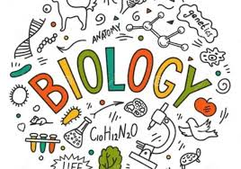

Специалност Биология

Във всеки випуск има 1 паралелка с по 26 ученици.
Учебният план включва допълнително:
-в ДЕВЕТИ клас - 2,5 часа Биология и 2 часа Химия.
-в ДЕСЕТИ клас - 3 часа Биология и 2 часа Химия.
-в ЕДИНАДЕСЕТИ клас - 3 часа Биология, 3 часа Химия и 2 часа Информационни
технологии.
-в ДВАНАДЕСЕТИ клас - 5 часа Биология, 5 часа Химоя, 1 час Информационни
технологии, 1 час Английски език и 1 час Български език.
Математика
Информатика
Към началната страница
Име:Християн Йорданов, 12.В клас, №25, 14.12.2020 година